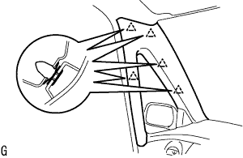
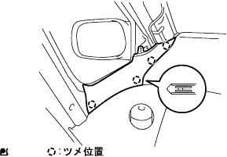
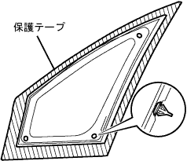
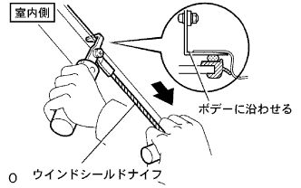
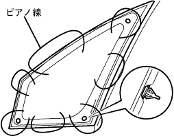

Front side fix window ASSY LH removal |
| 1. Precautions when removing the front side hype kus window |
If the front side -fix window clip is damaged in the front side fix window installation, the front side fix window is re -maintained by using a butyl tape instead of a damaged clip.Use is possible.
| 2. Pillar No.1 Garnish LH removed |
Remove the claws and remove the pillar No.1 Garnitsui LH.
| 3. Remove the front pillar garnish LH |
|  |
Pull it from the upper part of the garnish to the inside of the vehicle, remove the clip, and remove the front pillar garnish LH.
| 4. Remove the front pillar garnish LWR LH |
|  |
Remove the four claws and remove the front pillar garnitsui LWR LH.
| 5. Outari View Mirror ASSY LH removed |
Take off the nut.
Remove the outer mirror bezel and remove the bolt.
Cut the connector.
Remove the claws and remove the Otarija View Miller ASSY LH.
| 6. Remove the front side fix window ASSY LH |
|  |
Put a protective tape on the front side fix window ASSY LH LH outer circumference.
Attach the suction rubber.
|  |
When using a wind shield knife.
Apply soapy water sufficiently to the glass glue.
Insert a wind shield knife into the adhesive from the indoors of the body.
While holding the blade and the end of the body at a right angle, the blade of the wind shield knife is adjusted to the body and the end, and the adhesive is drained parallel to the end of the body to separate the adhesive.
|  |
When using a piano wire.
As shown in the figure, the piano wire (0.6 mm is appropriate) and attach both ends to the Mighty Player.
Pull the piano line alternately to leave the clip and separate the adhesive.
Hold the suction rubber, remove the clip from the indoor side with a plier, etc., and remove the front side fix window ASSY LH.